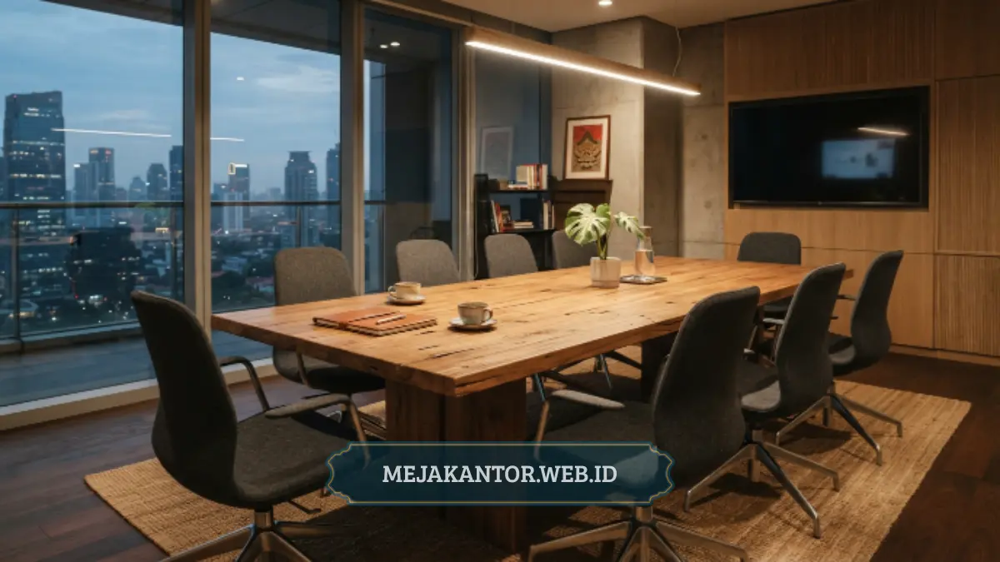

Ruang rapat minimalis adalah ruang pertemuan kantor yang dirancang dengan furnitur fungsional, garis desain sederhana, dan tata letak efisien agar mendukung fokus kerja tim. Konsep ini menekankan efisiensi ruang tanpa mengurangi kenyamanan maupun kesan profesional.
Semakin banyak kantor modern beralih ke konsep ini karena kebutuhan ruang kerja yang fleksibel terus meningkat, terutama di gedung perkantoran dengan luas terbatas dan biaya sewa yang terus naik setiap tahunnya.
- Ruang rapat minimalis mengutamakan furnitur multifungsi dan tata letak efisien.
- Elemen wajib mencakup meja rapat, kursi ergonomis, pencahayaan, dan penyimpanan tersembunyi.
- Ukuran ruang menentukan jenis meja rapat yang paling sesuai.
- Material kayu lapis dan metal ringan menjadi pilihan populer untuk kesan modern.
- Investasi furnitur berkualitas mendukung produktivitas rapat dan citra perusahaan.
Daftar Isi Artikel
- Apa yang Dimaksud dengan Ruang Rapat Minimalis?
- Mengapa Banyak Kantor Beralih ke Konsep Minimalis?
- Furnitur Apa Saja yang Wajib Ada di Ruang Rapat Minimalis?
- Bagaimana Memilih Meja Rapat yang Tepat?
- Bagaimana Memilih Kursi yang Nyaman untuk Rapat Panjang?
- Berapa Ukuran Ideal Ruang Rapat Minimalis?
- Bagaimana Menata Furnitur agar Ruangan Terasa Lebih Luas?
- Material Apa yang Cocok untuk Furnitur Ruang Rapat Minimalis?
- Apa Kesalahan Umum saat Mendesain Ruang Rapat Minimalis?
- Bagaimana Ruang Rapat Minimalis Mendukung Produktivitas Tim?
- Berapa Kisaran Investasi untuk Furnitur Ruang Rapat Minimalis?
- Bagaimana Memilih Kombinasi Meja dan Kursi yang Serasi?
Apa yang Dimaksud dengan Ruang Rapat Minimalis?
Ruang rapat minimalis adalah ruang pertemuan kantor yang menekankan kesederhanaan bentuk, efisiensi furnitur, dan pengurangan elemen dekoratif berlebihan. Konsep ini berbeda dari ruang rapat konvensional yang cenderung menggunakan meja besar bergaya klasik serta banyak aksesori ruangan.
Filosofi minimalis pada ruang rapat berfokus pada tiga hal utama: fungsi, efisiensi ruang, dan kenyamanan visual. Setiap furnitur yang ditempatkan harus memiliki peran jelas, baik sebagai tempat diskusi, media presentasi, maupun penyimpanan dokumen.
Warna netral seperti putih, abu-abu, dan cokelat kayu banyak dipilih karena memberi kesan tenang dan profesional, sekaligus memudahkan kombinasi dengan berbagai gaya interior kantor lainnya tanpa menimbulkan kesan sempit.
Konsep ini juga relevan dengan tren kerja hybrid saat ini, di mana ruang rapat sering digunakan bergantian oleh tim kecil maupun sesi video conference. Furnitur yang ringkas dan mudah dipindahkan menjadi nilai tambah tersendiri bagi kantor modern.
Mengapa Banyak Kantor Beralih ke Konsep Minimalis?
Peralihan ke ruang rapat minimalis umumnya didorong oleh keterbatasan luas kantor dan kebutuhan efisiensi biaya operasional. Kebutuhan ruang meeting yang fleksibel meningkat secara signifikan seiring perkembangan cara kerja tim modern saat ini.
Selain faktor ruang, estetika minimalis juga dianggap lebih mudah dirawat dan tidak cepat terlihat usang dibandingkan gaya interior yang sarat ornamen. Hal ini membuat furnitur ruang rapat minimalis menjadi investasi jangka panjang yang hemat biaya perawatan.
Furnitur Apa Saja yang Wajib Ada di Ruang Rapat Minimalis?
Furnitur wajib pada ruang rapat minimalis meliputi meja rapat, kursi ergonomis, unit penyimpanan tersembunyi, dan perangkat pendukung presentasi. Kombinasi keempat elemen ini menentukan kenyamanan sekaligus fungsi ruang secara keseluruhan.
Meja rapat menjadi pusat ruangan dan biasanya dipilih berdasarkan kapasitas peserta, mulai dari meja bundar kecil untuk empat orang hingga meja oval memanjang untuk rapat direksi. Kursi rapat sebaiknya memiliki penyangga punggung yang memadai agar peserta tetap nyaman selama diskusi panjang.
Unit penyimpanan tersembunyi, seperti kabinet built-in, membantu menjaga ruangan tetap rapi tanpa dokumen atau perangkat berserakan. Ruang pertemuan yang rapi membuat peserta lebih fokus dan terhindar dari distraksi barang yang menumpuk.
Bagaimana Memilih Meja Rapat yang Tepat?
Pemilihan meja rapat yang tepat bergantung pada jumlah peserta rutin, bentuk ruangan, dan kebutuhan akses kabel untuk perangkat elektronik. Meja dengan modul sambungan cocok untuk ruang yang sering diubah kapasitasnya.
Untuk ruang rapat kecil berkapasitas empat hingga enam orang, meja bundar atau persegi ringkas lebih efisien karena tidak menyisakan ruang kosong berlebih. Pengaturan ini membuat alur komunikasi antarpeserta terasa lebih setara dan terbuka.
Sementara untuk ruang rapat berkapasitas lebih besar, meja oval atau rectangular dengan modul tambahan memberi fleksibilitas pengaturan ulang sesuai kebutuhan acara. Tata letak memanjang ini memudahkan seluruh peserta memperhatikan materi presentasi utama.

Bagaimana Memilih Kursi yang Nyaman untuk Rapat Panjang?
Kursi yang nyaman untuk rapat panjang idealnya memiliki sandaran ergonomis, dudukan empuk, dan mekanisme putar agar peserta dapat bergerak leluasa. Ketinggian kursi juga perlu disesuaikan dengan tinggi meja agar postur duduk tetap sehat.
Material kain breathable lebih disarankan dibandingkan kulit sintetis untuk ruangan tanpa pendingin optimal, karena membantu menjaga kenyamanan pada rapat yang berlangsung lebih dari satu jam.
Berapa Ukuran Ideal Ruang Rapat Minimalis?
Ukuran ideal ruang rapat minimalis bergantung pada jumlah peserta, dengan estimasi umum sekitar dua meter persegi per orang agar pergerakan tetap leluasa. Ruang kecil untuk empat orang biasanya cukup dengan luas delapan hingga sepuluh meter persegi.
Perhitungan ini penting agar furnitur yang dipilih tidak membuat ruangan terasa sesak. Jarak antara kursi dan dinding sebaiknya disisakan minimal enam puluh hingga sembilan puluh sentimeter agar peserta dapat keluar masuk tanpa harus menggeser kursi rekan lainnya.
Bagaimana Menata Furnitur agar Ruangan Terasa Lebih Luas?
Menata furnitur agar ruangan terasa lebih luas dapat dilakukan dengan memilih meja berkaki ramping, memanfaatkan penyimpanan vertikal, dan menghindari furnitur dengan volume besar yang tidak diperlukan.
Pemilihan warna terang pada permukaan meja dan dinding turut membantu menciptakan kesan lapang. Sementara itu, pencahayaan alami dari jendela sebaiknya dimaksimalkan sebelum menambah instalasi lampu sorot buatan.
Material Apa yang Cocok untuk Furnitur Ruang Rapat Minimalis?
Material yang cocok untuk furnitur ruang rapat minimalis meliputi kayu lapis (plywood), particle board berlapis melamin, dan rangka metal ringan. Ketiga material ini menawarkan keseimbangan antara daya tahan, bobot, dan tampilan modern.
Kayu lapis memberikan kesan hangat dan natural, cocok untuk kantor yang ingin menonjolkan kesan profesional namun tetap ramah. Particle board berlapis melamin lebih ekonomis dan tersedia dalam banyak pilihan warna serasi.
Rangka metal ringan pada kaki meja dan kursi memberi kesan kontemporer sekaligus menjaga kekuatan struktur furnitur dalam pemakaian jangka panjang, memastikan stabilitas tinggi untuk aktivitas kerja setiap hari.
Apa Kesalahan Umum saat Mendesain Ruang Rapat Minimalis?
Kesalahan umum saat mendesain ruang rapat minimalis meliputi pemilihan meja yang terlalu besar untuk ruangan, minimnya penyimpanan, dan pengabaian aspek pencahayaan serta akses listrik untuk perangkat presentasi.
Kesalahan lain yang sering terjadi adalah memilih kursi tanpa mempertimbangkan durasi rapat rata-rata, sehingga peserta merasa cepat lelah pada sesi diskusi yang berlangsung lama.
Perencanaan tata letak yang matang sejak awal dapat mencegah kendala ini sebelum furnitur dibeli dan dipasang. Pemilihan ukuran yang presisi menjaga fungsionalitas ruang kerja tetap berjalan secara optimal.
Bagaimana Ruang Rapat Minimalis Mendukung Produktivitas Tim?
Ruang rapat minimalis mendukung produktivitas tim dengan mengurangi distraksi visual, mempercepat persiapan sebelum rapat, dan memberi kenyamanan fisik yang membuat peserta lebih fokus pada agenda diskusi.
Ruangan yang tertata rapi tanpa kabel berserakan atau tumpukan dokumen membantu peserta lebih cepat memulai diskusi. Furnitur yang nyaman turut mengurangi rasa lelah fisik, sehingga kualitas keputusan rapat menjadi lebih maksimal.
Dari sisi citra perusahaan, ruang rapat yang rapi dan modern memberi kesan profesional kepada klien atau mitra bisnis yang berkunjung, yang pada akhirnya memperkuat kepercayaan mereka terhadap kualitas bisnis Anda.
Berapa Kisaran Investasi untuk Furnitur Ruang Rapat Minimalis?
Kisaran investasi untuk furnitur ruang rapat minimalis bervariasi tergantung kapasitas ruangan, material yang dipilih, dan jumlah unit kursi yang dibutuhkan, sehingga sebaiknya disesuaikan dengan anggaran masing-masing kantor.
Sebagai gambaran umum, ruang rapat kecil dengan kapasitas empat hingga enam orang biasanya membutuhkan investasi lebih rendah dibanding ruang rapat direksi berkapasitas besar dengan material kayu solid atau HPL premium.
Merencanakan anggaran sejak awal membantu menentukan prioritas antara meja, kursi ergonomis, dan elemen pendukung lain seperti unit penyimpanan tersembunyi atau soket kabel terintegrasi.
Bagaimana Memilih Kombinasi Meja dan Kursi yang Serasi?
Kombinasi meja dan kursi yang serasi umumnya mengikuti prinsip kesamaan warna dasar dan keselarasan gaya desain, sehingga ruang rapat terlihat menyatu meski furnitur berasal dari beberapa jenis material berbeda.
Meja berbahan kayu lapis dengan kaki metal ramping akan terlihat sangat harmonis apabila dipadukan dengan kursi berbahan kain netral dan rangka metal senada, dibanding kursi kulit berornamen mencolok.
Menjaga konsistensi tinggi meja dan kursi juga sangat penting agar postur duduk peserta tetap sehat, biasanya dengan selisih ketinggian sekitar dua puluh lima hingga tiga puluh sentimeter antara permukaan meja dan dudukan kursi.
Ruang rapat minimalis yang dirancang dengan tepat mampu meningkatkan efisiensi kerja tim sekaligus memperkuat citra profesional perusahaan di mata klien maupun mitra bisnis. Kunci utamanya terletak pada pemilihan meja, kursi, dan penyimpanan yang proporsional.
Jika Anda sedang merencanakan atau merenovasi ruang rapat kantor, koleksi meja dan kursi rapat minimalis di mejakantor.web.id dirancang khusus untuk mendukung kebutuhan tersebut, mulai dari meja bundar ruang kecil hingga meja rapat direksi besar.
Konsultasikan kebutuhan furnitur ruang rapat kantor Anda dan pesan sekarang melalui mejakantor.web.id untuk mendapatkan ruang rapat yang lebih rapi, fungsional, dan representatif bagi seluruh tim maupun tamu perusahaan Anda.

Mega Anggun (Ega)
Penulis Konten & Spesialis Penataan Interior Kantor. Berpengalaman dalam memberikan tips ergonomi dan memilih furnitur terbaik untuk menunjang produktivitas kerja.